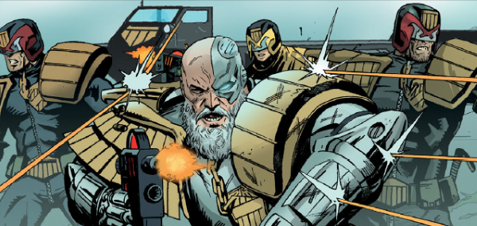

Judge Irwin Guthrie was a Wally Squad operative during Dredd's clean-up of sector 301 (aka The Pit), and was forced to go rogue to avoid assassination by a cabal of corrupt Judges. Heavily wounded, he is now largely cybernetic.
Art by Karl Richardson
| Story Title | Parts | Pages | w indicates a wraparound coverCovers | Year(s) | Issues | Writer | Artist | Colourist | Letterer |
|---|---|---|---|---|---|---|---|---|---|
From Judge DreddThe Pit | 14 | 86 | 970: Carlos Ezquerra 974: Cliff Robinson 978: Colin MacNeil 3 | 1995-1996 | 970-983 | John Wagner | Carlos Ezquerra: 1‑8 Colin MacNeil: 9‑11 Lee Sullivan: 12‑14 various | Alan Craddock: 9‑11 Mike Hadley: 12‑14 various | Tom Frame |
From Judge Dredd | The PitDeclaration of War | 1 | 6 | 0 | 1996 | 991 | John Wagner | Lee Sullivan | Alan Craddock | Tom Frame |
From Judge Dredd | The PitBongo War | 8 | 56 | 994: Simon Davis 999: Sean Phillips 2 | 1996 | 992-999 | John Wagner | Lee Sullivan: 1, 8 Alex Ronald: 2‑4 Carlos Ezquerra: 5‑7 various | Alan Craddock: 1‑4, 8 various | Tom Frame |
From Judge Dredd Doomsday arc: prog/meg crossover.Doomsday | 4 | 60 | M3.56: Duncan Fegredo M3.57: Kevin Walker M3.59: Greg Staples 3 | 1999 | M3.56-M3.59 | John Wagner | Colin Wilson: 1‑2 Mike Collins: 3‑4 various | Janet Gale: 1‑2 Alan Craddock: 3‑4 various | Tom Frame |
From Judge DreddSin City | 11 | 78 | 1289: Kevin Walker 1296: Jim Murray 1299: Kevin Walker 3 | 2002 | 1289-1299 | John Wagner | Kevin Walker | <-- | Tom Frame |
From Judge Dredd Featuring SJS Judge Ishmael.Gulag | 5 | 30 | 1385: Charlie Adlard and Chris Blythe 1 | 2004 | 1382-1386 | Gordon Rennie | Charlie Adlard | Chris Blythe | Tom Frame |
From Judge DreddThe Searchers | 1 | 6 | 0 | 2005 | 1424 | Gordon Rennie | Carl Critchlow | <-- | Tom Frame |
From Judge DreddDescent | 5 | 30 | 1436: Boo Cook 1 | 2005 | 1432-1436 | Gordon Rennie | Boo Cook | <-- | Tom Frame |
From Judge DreddRadstock | 3 | 18 | 1439: Karl Richardson 1 | 2005 | 1437-1439 | Gordon Rennie | Karl Richardson | <-- | Tom Frame |
From Judge DreddBlood Trails | 10 | 60 | 0 | 2005 | 1440-1449 | Gordon Rennie | Andrew Currie | Chris Blythe | Tom Frame |
From Judge DreddIn the Stomm | 1 | 8 | 0 | 2005 | M236 | Simon Spurrier | Boo Cook | <-- | Annie Parkhouse |
From Judge DreddBurned Out | 2 | 12 | 0 | 2005 | 1461, M238 | Gordon Rennie | Carl Critchlow | <-- | Tom Frame |
From Judge DreddHouse of Pain | 6 | 36 | 1488: Colin MacNeil 1 | 2006 | 1485-1490 | Gordon Rennie | Ian Richardson | Chris Blythe | Tom Frame |
From Judge DreddMind Games | 1 | 10 | 0 | 2008 | M269 | Gordon Rennie | Inaki Miranda | Eva de la Cruz | Annie Parkhouse |
From Judge DreddPlunder | 3 | 30 | M417: Karl Richardson 1 | 2019-2020 | M415-M417 | Michael Carroll | Karl Richardson | <-- | Annie Parkhouse |
| year | episodes | pages |
| 1993 | 0 | 0 |
| 1994 | 0 | 0 |
| 1995 | 3 | 19 |
| 1996 | 20 | 129 |
| 1997 | 0 | 0 |
| 1998 | 0 | 0 |
| 1999 | 4 | 60 |
| 2000 | 0 | 0 |
| 2001 | 0 | 0 |
| 2002 | 11 | 78 |
| 2003 | 0 | 0 |
| 2004 | 5 | 30 |
| 2005 | 22 | 134 |
| 2006 | 6 | 36 |
| 2007 | 0 | 0 |
| 2008 | 1 | 10 |
| 2009 | 0 | 0 |
| 2010 | 0 | 0 |
| 2011 | 0 | 0 |
| 2012 | 0 | 0 |
| 2013 | 0 | 0 |
| 2014 | 0 | 0 |
| 2015 | 0 | 0 |
| 2016 | 0 | 0 |
| 2017 | 0 | 0 |
| 2018 | 0 | 0 |
| 2019 | 1 | 10 |
| 2020 | 2 | 20 |
| 2021 | 0 | 0 |